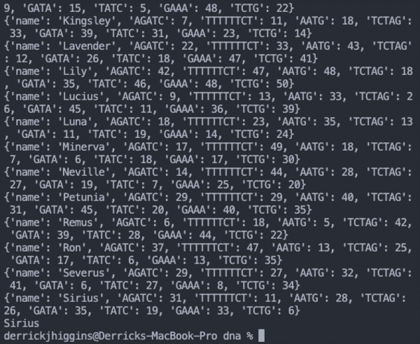
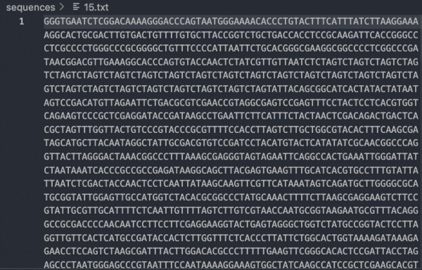
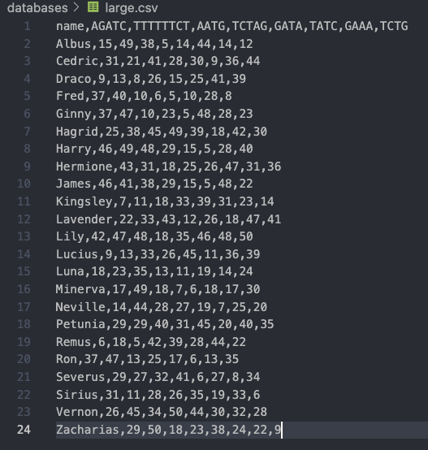
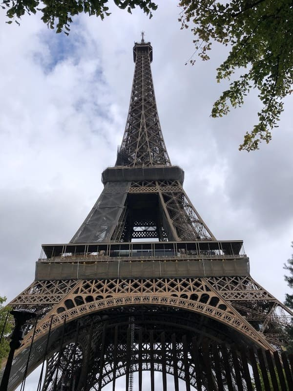
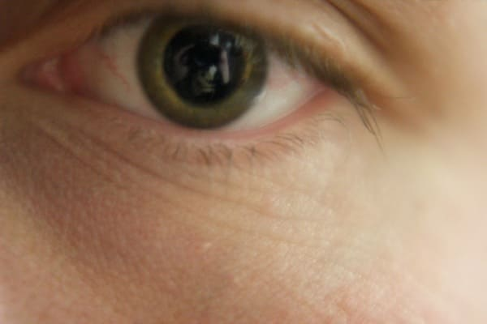
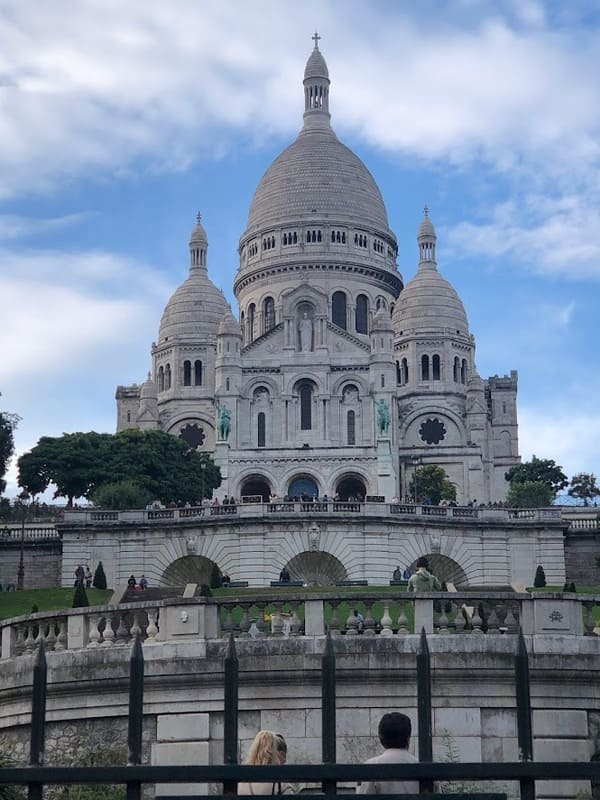
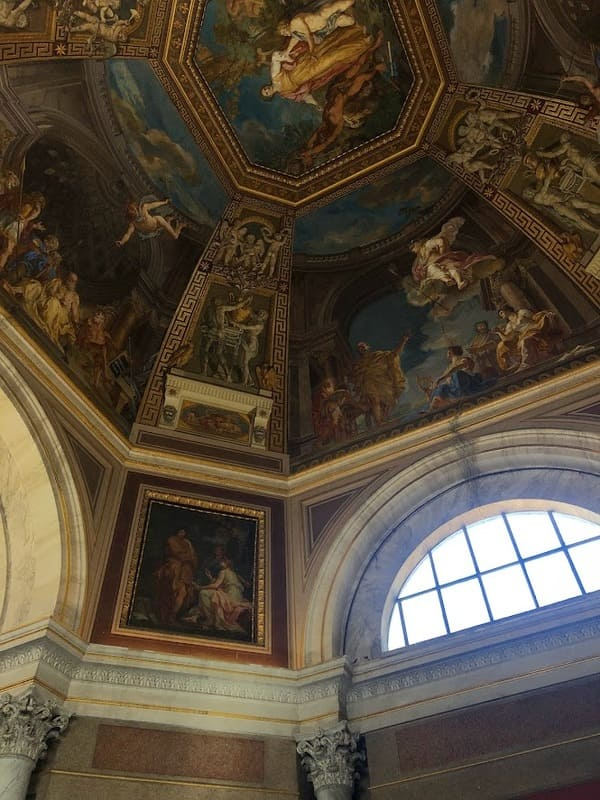
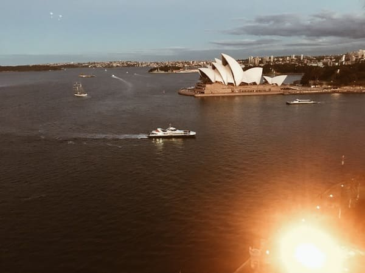
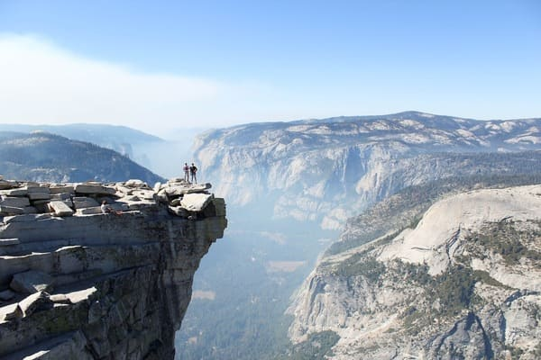
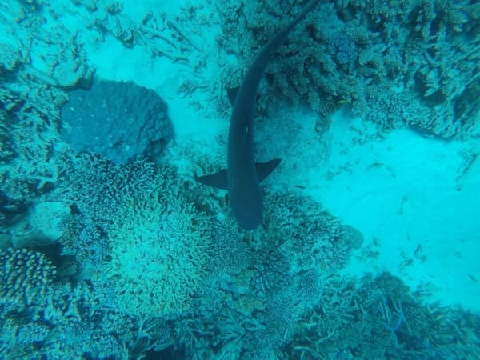

This is the output of one of my first programs written in Python during Harvard's CS50 course. The program identifies a person based on matching sequences of nucleotides within their DNA as compared to a DNA database.

Here is the string of DNA that was sampled and searched for nucleotide patterns.

This is the database of our (fictional) characters used to find DNA matches.

No tourist photo collection is complete without a shot of the Eiffel Tower. La vie est trop courte pour boire du mauvais vin.

The iris sphincter muscle, also known as the pupillary sphincter or sphincter pupillae, is a muscle located in the colored part of the eye called the iris.

Here is the lesser known counterpart to the Eiffel Tower: The Basilica of the Sacred Heart of Paris. Lesser known, but certainly not lesser in beauty.

Can beauty be stolen? Roman imperialism on display in the Vatican seemed to suggest that it can, though historical experts may disagree.That's me singing on stage in front of 100,000+ people! Just kidding, that's Chris Martin of Coldplay, but I can always dream, right?

One of the more iconic musical structures in the world, the Sydney Opera House is surprisingly known for its visual aesthetic and not its acoustic excellence. That being said, I did enjoy the singular concert I attended there.

When we reached the top of Half Dome during our climb, I realized my water pouch had leaked. I had no water for the remainder of the climb down: over eight hours in 90+F degree weather. This is maybe the closest I have come to seeing hallucinations.The Golden Gate Bridge is not made of gold, nor silicon for that matter. I once heard that the bridge is only gold in VR.

The Great Barrier Reef is stunning. I hope everyone can experience it in some capacity during their lifetime, while preserving its integrity and working to keep our oceans clean. You can donate and help plant a coral to restore the reef here.